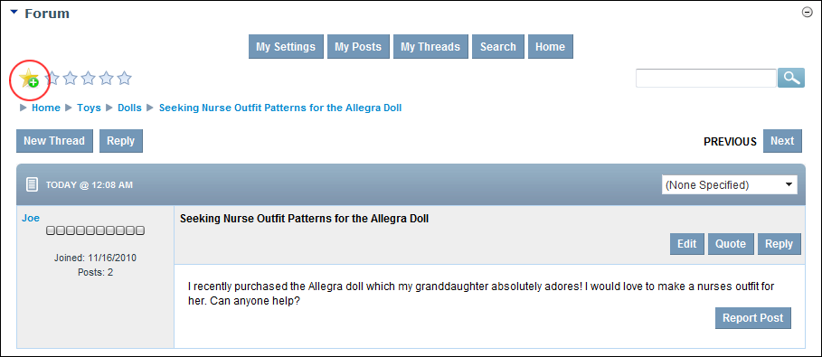

Adding a Bookmark to a Thread
How to add a bookmark to a thread in the Forum module. Threads with a bookmark are listed in your User Settings Control Panel.
- Locate and open the required thread. See "Viewing any Post"

- Click the Add To Bookmarks button to add a bookmark - OR - Click the Remove From Bookmarks button to remove the bookmark.